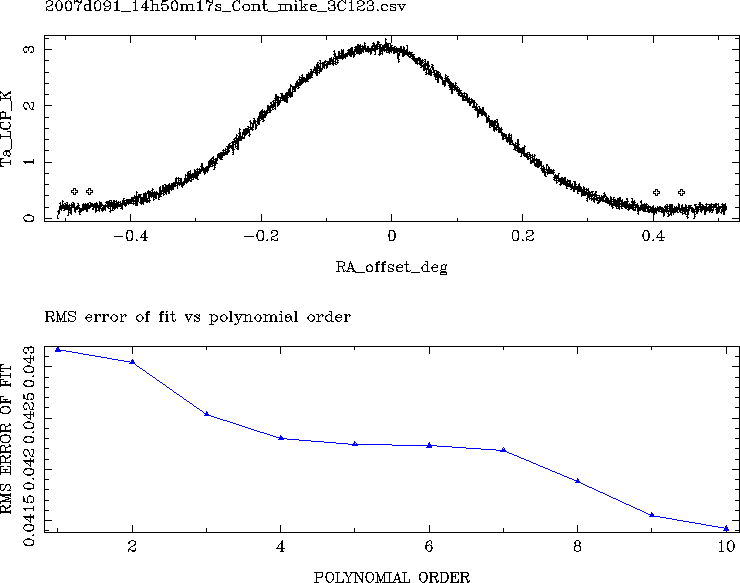
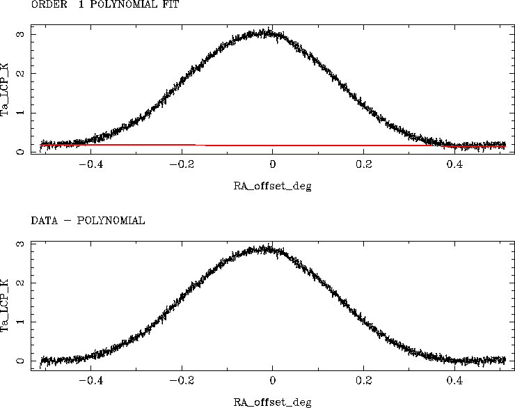
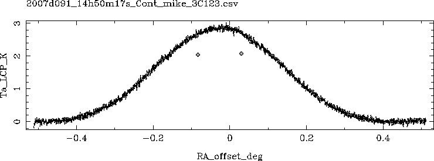
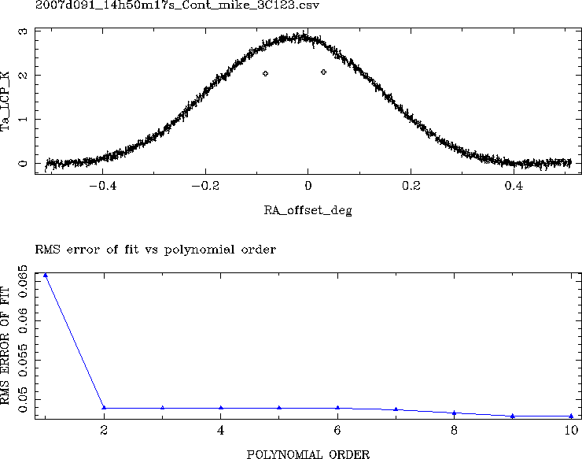
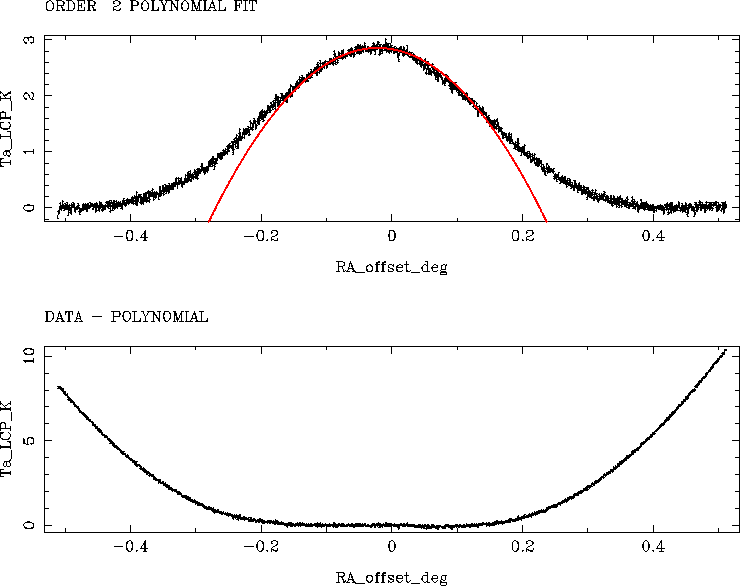

PO [PB] [polynomial order] [mem]
Fit a polynomial of specified order to the spectrum baseline, or,
more generally, through selected segments of data.
If the string PB is used as the second parameter, then
the baseline blocks set using command PB will be used for the fit.
If the polynomial order is to be specified as a parameter,
characters other than 'pb' must be used for the second parameter as a
placeholder so that the polynomial order is read correctly.
If the memory is to be specified as a parameter, then one or more
characters must be used as a placeholder for 'pb' and the polynomial
order must be specified, either as a '0' if the order wanted is to be
tested, or specify the order eg '3'
If the polynomial order is specified and
baseline blocks for fitting the polynomial have been specified eg with PB
then the fit is done automatically without further user intervention.
Otherwise the user can select baseline blocks using a cursor on a plot.
How to mark points with the cursor:
mouse left button or A = Add new point
centre button or D = Delete nearest point
right button or X = eXit - no more points to add
The coordinates returned are sorted on X
If the memory is not given as a parameter, the set memory is used if no
other memories have been used, otherwise the user is prompted for the
memory to use.
Polynomials of order 1 to 10 are fitted and a graph of the rms error of
each fit is displayed so that the user can select the most suitable
order. This is normally the order at which the rms error of the fit
changes from decreasing rapidly to decreasing slowly.
The plot of the selected polynomial is then shown, superimposed on the
data, together with a plot of the data with the polynomial subtracted
from it.
The user is then asked if the fit is acceptable; if it is, the data minus
the fitted polynomial replaces the original data in memory; if not the
user can change either the baseline blocks (if PB was not specified), or
the polynomial order.
see also PB
Examples:
Use the previously defined baseline blocks to fit a third order polynomial
to the data in the default memory
po pb 3
Do not use any previously defined baseline blocks, fit a first order
polynomial to the data in memory 5
po nopb 1 5
Do not use any previously defined baseline blocks,
fit a polynomial whose order is to be tested interactively,
to the data in memory 5
po nopb 0 5
PO can be used to obtain a least squares estimate of the centre position
and height of, for example, the peak in a continuum drift scan. To do
this, follow this sequence:
Correct the baseline of the scan as needed, using PO.
Use VW to select the top 1/3rd of the peak.
Use PO to fit a second order polynomial to the top 1/3 of the scan.
When such a parabolic fit is done, the PO routine will list the X,Y
values of the maximum.
Example: fitting a line baseline between minima in a drift scan
Two pairs of points defining the minima have been marked by clicking the left mouse button. Their location is shown by the '+' markers.

The po function has test-fitted polynomials of order 1 to 10 to the data so and plotted the rms error of each fit versus the fit order to assist in selecting the correct polynomial order.

A first order polynomial was chosen and subtracted from the data.
Example: fitting a parabola to the peak of a radio source in a drift scan in order to estimate the peak height (antenna temperature).

The start and end of the scan to be fitted with a parabola (polynomial order 2) have been marked by clicking the left mouse button. Their location is shown by the '+' markers.

The plot of rms error versus po order shows that a second order is a good fit.

The second order polynomial has been fitted. The following information was printed for the user:
Fitting polynomial order 2
polynomial coefficients :
0 1 2
2.83603 -2.01318 -46.4803
order 2 fit RMS error = 0.048974
Parabola Xmax = -0.0216562489 Ymax = 2.85782788
So the location of the maximum (Xmax), the peak height (Ymax)
and an estimate of the uncertainty in the peak height (RMS error) are given.